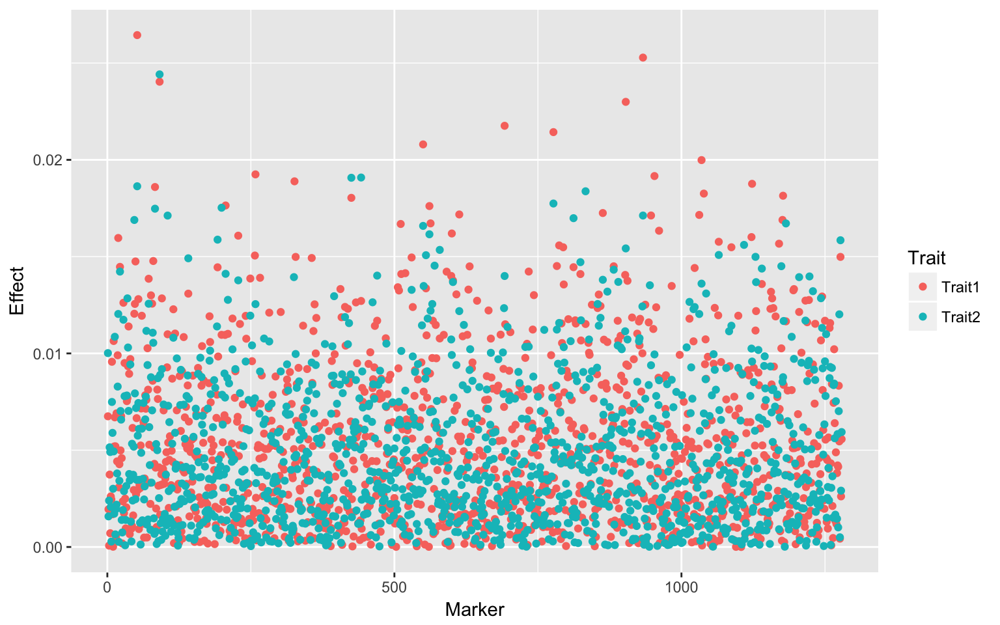
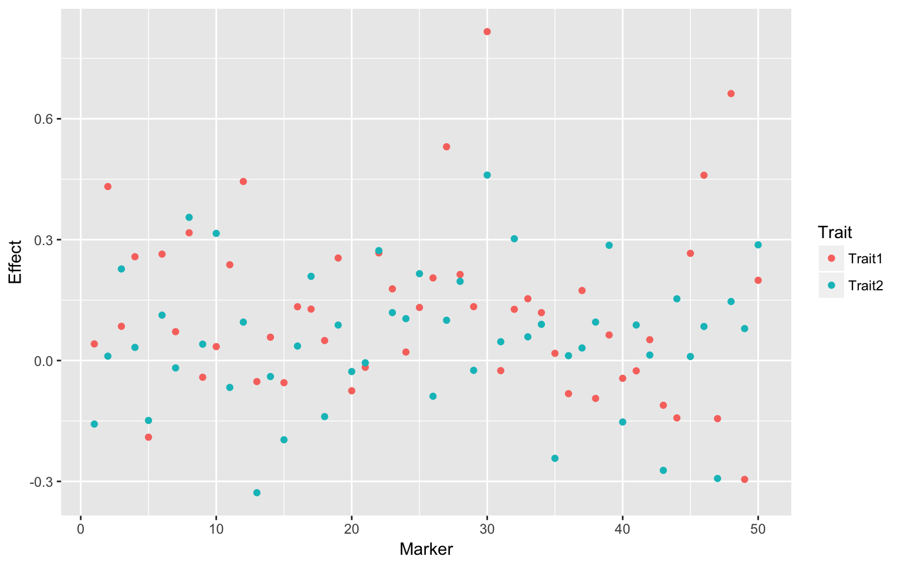

Multi-trait GWAS
Statistical Methods for Omics-assisted Breeding Hands-on Workshop
Fitting a bivariate GBLUP model using the MTM package
rm(list = ls())
library(MTM)
library(BGLR)
library(ggplot2)
data(wheat)
Y <- wheat.Y[, 3:4]
W <- scale(wheat.X, center = TRUE, scale = TRUE)
G <- tcrossprod(W)/ncol(W)
fm <- MTM(Y = Y, K = list(list(K = G, COV = list(type = "UN", df0 = 4, S0 = diag(2)))),
resCov = list(type = "UN", S0 = diag(2), df0 = 4), nIter = 500, burnIn = 200,
thin = 5, saveAt = "ex2_")Backsolving for marker effects
a1 <- abs(t(W) %*% solve(W %*% t(W)) %*% fm$K[[1]]$U[, 1])
a2 <- abs(t(W) %*% solve(W %*% t(W)) %*% fm$K[[1]]$U[, 2])
dat <- data.frame(Marker = 1:ncol(W), Effect = c(a1, a2), Trait = c(rep("Trait1",
ncol(W)), rep("Trait2", ncol(W))))
ggplot(dat, aes(Marker, Effect, colour = Trait)) + geom_point()
Fitting a bivariate single marker regression GWAS model using the MTM package
rm(list = ls())
library(MTM)
library(BGLR)
library(ggplot2)
data(wheat)
Y <- wheat.Y[, 3:4]
W <- scale(wheat.X, center = TRUE, scale = TRUE)
G <- tcrossprod(W)/ncol(W)
Z <- matrix(rnorm(2 * 599), ncol = 2)
B <- rbind(c(1, 2, 3, -2), c(-2, 1, 0, 2))
for (i in 1:2) {
Y[, i] <- Y[, i] + Z %*% B[, i]
}
sub.X <- wheat.X[, 1:50]
m <- matrix(0, nrow = ncol(sub.X), ncol = 2)
for (j in 1:ncol(sub.X)) {
fm <- MTM(Y = Y, XF = cbind(Z, sub.X[, j]), K = list(list(K = G, COV = list(type = "UN",
df0 = 4, S0 = diag(2)))), resCov = list(type = "UN", S0 = diag(2), df0 = 4),
nIter = 50, burnIn = 20, thin = 5, saveAt = "ex2_")
m[j, 1] <- fm$B.f[3, 1]
m[j, 2] <- fm$B.f[3, 2]
}Visualization
dat <- data.frame(Marker = 1:ncol(sub.X), Effect = c(m[, 1], m[, 2]), Trait = c(rep("Trait1",
ncol(sub.X)), rep("Trait2", ncol(sub.X))))
ggplot(dat, aes(Marker, Effect, colour = Trait)) + geom_point()